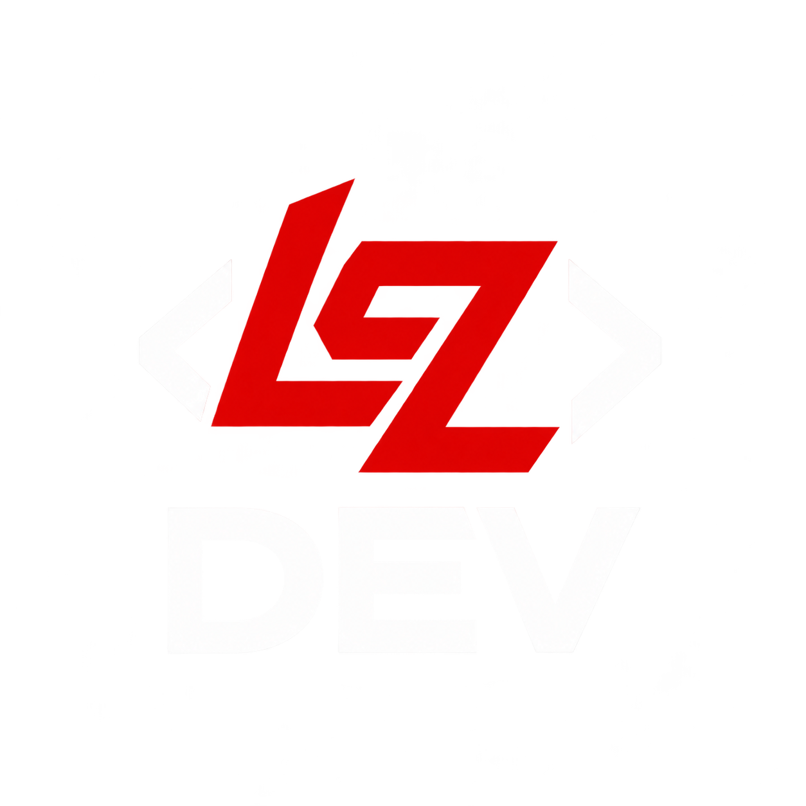

PORTFÓLIO DIGITAL
Landing pages
Uma página para apresentar sua oferta com clareza e facilitar o contato com seu negócio.

DESENVOLVIMENTO WEB E DE SOFTWARES
Sites claros, bem construídos e prontos para apresentar o seu negócio ao mundo.
Sou estudante de Análise e Desenvolvimento de Sistemas no Grupo Unis, atualmente no quarto período. Meu foco é desenvolvimento web e criar experiências digitais claras e funcionais.
Gosto de transformar ideias em sites, cuidando tanto da construção quanto da qualidade em diferentes telas.
Veja meu GitHubUma página para apresentar sua oferta com clareza e facilitar o contato com seu negócio.
Sites claros, fáceis de navegar e adaptados ao conteúdo e à identidade do seu negócio.
Ferramentas para organizar informações e simplificar rotinas, planejadas para as necessidades do seu projeto.
Revisão de navegação, links e formulários, com atenção ao funcionamento em diferentes telas.
Tecnologias presentes nos projetos do portfólio: da interface às integrações e publicação.
Meu espaço profissional para apresentar minha trajetória, os serviços que estudo e desenvolvo, minhas tecnologias e projetos.
Plataforma em desenvolvimento para aproximar estudantes, egressos e empresas de vagas, eventos e oportunidades de carreira.
Site da academia com unidades em Jesuânia e Olímpio Noronha, apresentando modalidades, equipe, horários, planos e formas de contato.
Me conte o que você está planejando. Vamos entender juntos o melhor caminho para sua presença digital.
Me encontre nas redes ou fale comigo pelo canal que preferir.